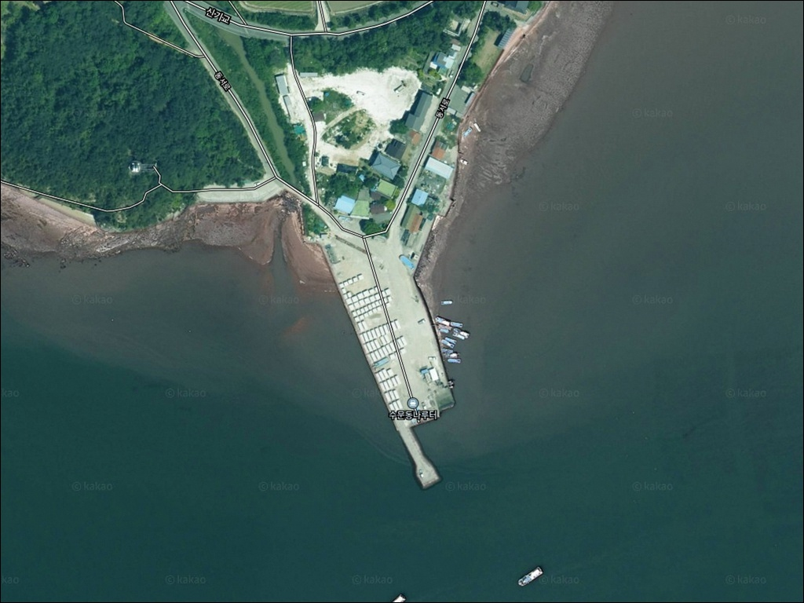
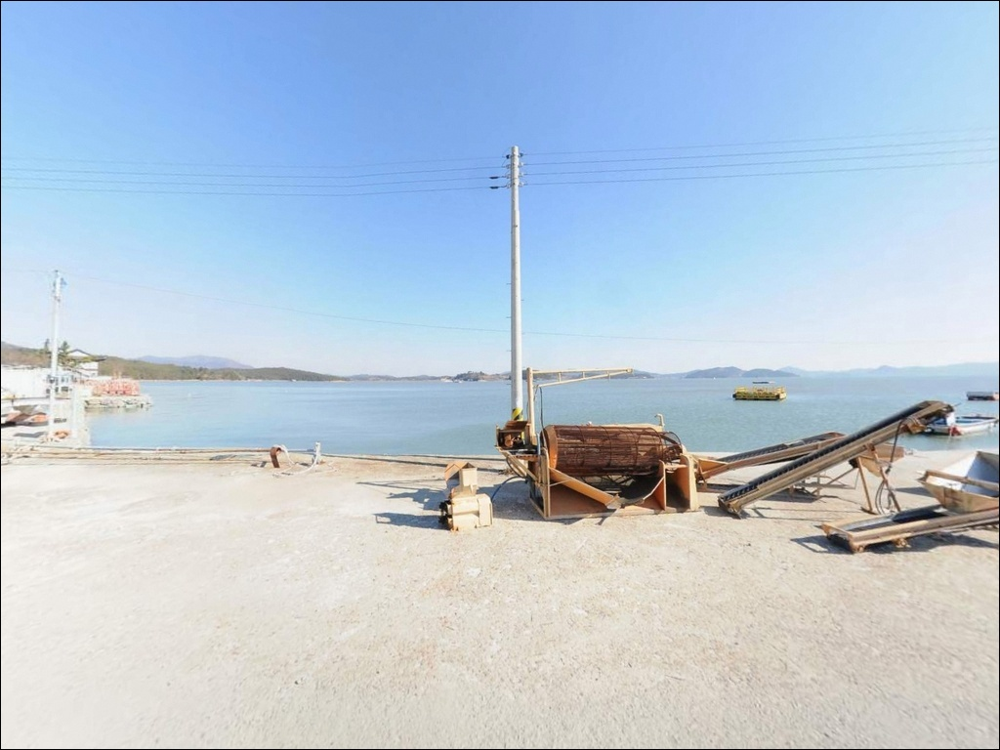
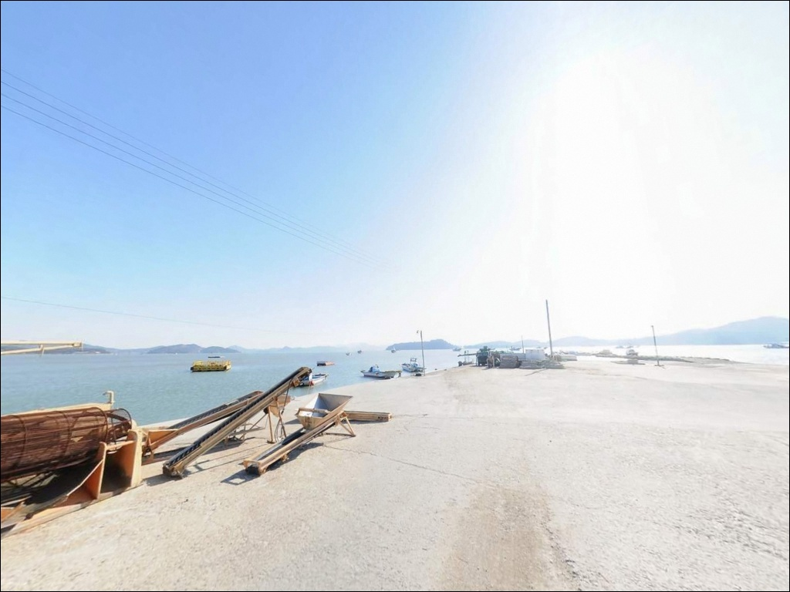
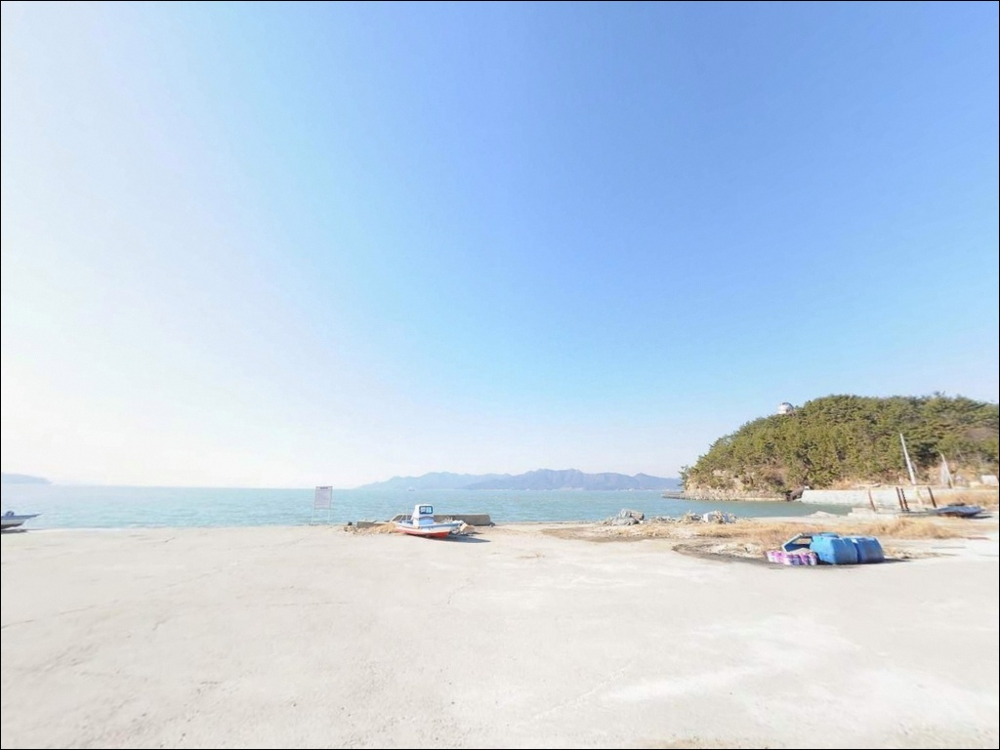
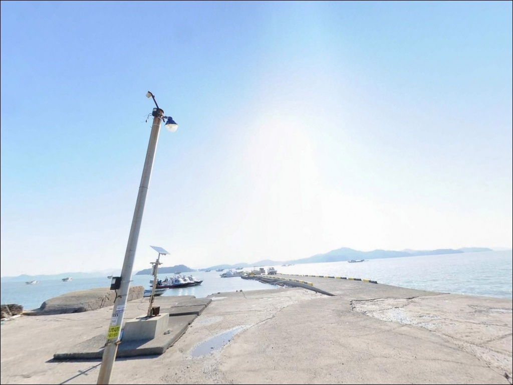
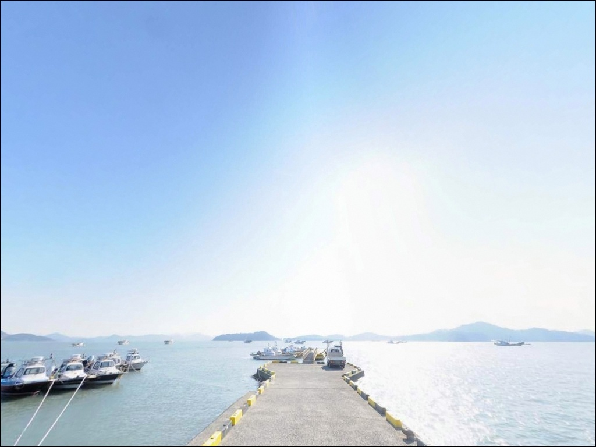
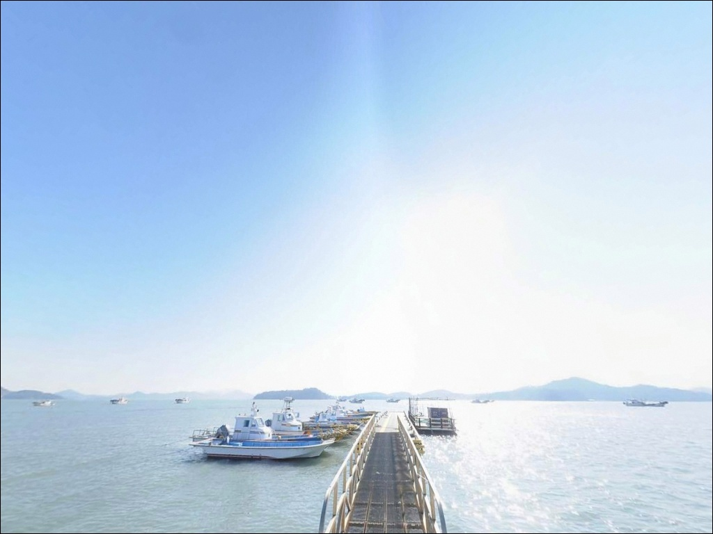
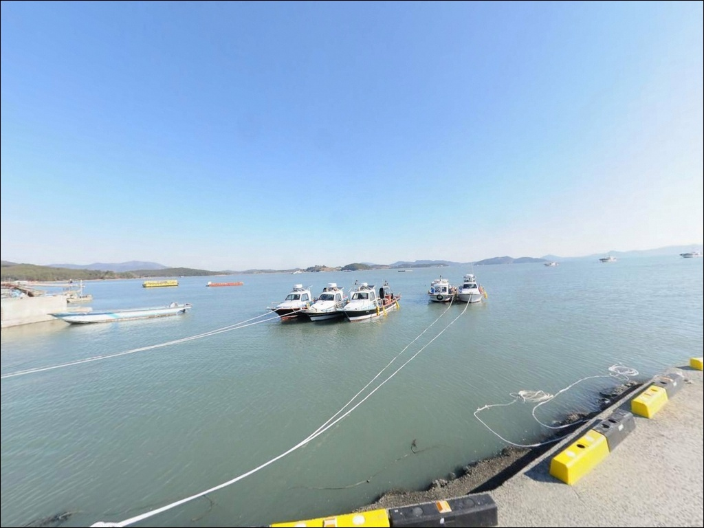
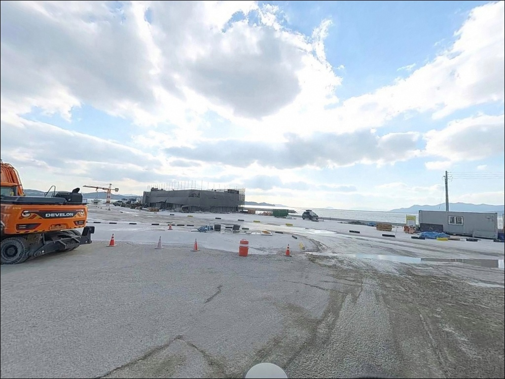

수문동나루터, 전남 고흥군 조용한 마을 작은 바닷가 차박 낚시 스팟 추천


포인트 안내
수문동나루터
전남 고흥군 대서면 안남리 738-82
물때를 확인하지 않고 수문동나루터에 도착하면
갯벌이 드러난 채 선착장 끝단까지
바닥이 비어 있는 광경을 맞닥뜨립니다.
이 포인트는 수심이 0.2~1.4m 수준의
얕은 펄 저질 구조로,
간조 시에는 낚시 자체가 불가능한
전형적인 내만 기수역 선착장입니다.
고흥만 방조제와 득량만 방조제 사이에
갇힌 내만 구조이며,
하천과 바다가 만나는 기수역 특성상
들물 타이밍에 입질 집중도가 높아집니다.
물때 하나가 조과의 전부를 결정하는
포인트인 만큼, 출발 전 바다타임 확인이
가장 먼저 해야 할 일입니다.
이 글은 수문동나루터의
진입 동선, 차박 여건, 물때 판단 기준,
낚시 스타일별 공략 조건에 집중합니다.
조황 단정이나 특정 어종 보장은
이 글의 범위에 포함되지 않습니다.

1. 진입 동선과 포인트 접근 여건
수문동나루터는 안남리 마을을 통과하는
해안도로에서 접근합니다.
대서면 일대 해안 마을 특성상
포장도로와 농어촌 골목길이 혼재하며,
나루터 직전 마지막 구간은
차량 1대 통행 폭 수준의 소로입니다.
승용차 기준 진입은 가능하지만
캠핑카나 대형 SUV 루프탑 차량이라면
출발 전 위성지도로 도로 폭을
반드시 확인하는 편이 좋습니다.
나루터 도착 후 주차는
선착장 앞 공터와 인근 해안 데크 진입로 옆 공간,
도로변 갓길을 활용합니다.
소형 차량 기준 회차는 가능하며,
대형 차량은 진입 전 회차 여건을
별도로 살펴야 합니다.
나루터 인근은 남파랑길 76코스의
경유지로 지정된 구간입니다.
신기수문동 정류장, 해안 데크,
별나라체험장이 인접해 있어
낮 시간에는 보행자 통행이
일부 있는 환경입니다.

2. 차박 환경과 야간 체류 여건
수문동나루터 현장 자체의 차박 여건은
제한적입니다.
나루터 구간은 야간 가로등이 적고
어두운 편이며,
민가 밀집도가 낮아
프라이버시는 양호한 수준입니다.
차량 통행도 많지 않아 조용한 환경이지만,
선착장 공터 규모가 크지 않아
차박을 메인으로 삼기에는
주차 공간 여유가 넉넉하지 않습니다.
차박 거점으로는 약 1.7km 거리의
대전해수욕장 소나무 숲 야영지를
활용하는 방식이 효율적입니다.
공중화장실과 개수대 시설이 갖춰져 있으며,
소나무 숲이 바람을 막아주는 구조라
내만 인근에서는 차박 조건이 비교적 안정적입니다.
다만 겨울 시즌에는 운영이 중단되므로
사전 확인이 필요합니다.
고흥호 내만 구조 특성상
외해 직접 노출이 없어
파도 영향은 제한적입니다.
기상에 따른 바람 변화는 있으나
전반적으로 수면이 안정된 환경입니다.


3. 주변 편의시설 및 인프라 현황
나루터 반경 3km 이내에
득량만풍광휴식센터(안남리 산195)가 위치하며,
화장실과 마트, 주차장이 갖춰져 있습니다.
부족한 소품이나 물품은
이 시설을 통해 보완할 수 있습니다.
편의점과 주유소는
반경 3km 이내에 확정된 위치가 없습니다.
출발 전 보성군 벌교읍 방향이나
고흥읍에서 연료와 식수를
미리 보급하고 진입하는 것이 기본입니다.
24시간 편의점은 대서면 소재지 내에
위치해 있습니다.
응급 상황 시 가까운 의료시설까지
이동 거리가 상당합니다.
출발 전 고흥읍 방향 병원 위치를
미리 파악해 두는 편이 좋습니다.
대서파출소와 안남보건진료소가
반경 3km 내에 위치합니다.

4. 물때 기준으로 짜는 방문 준비
수문동나루터에서 가장 먼저 확인해야 할 것은
물때입니다.
수심이 0.2~1.4m에 불과한 펄 저질 구조로,
간조 시에는 선착장 끝단까지 물이 빠져
어떤 채비를 써도 낚시 자체가 불가능합니다.
바다타임에서 안남리 기준 물때를 확인하고
들물 시작 이후 만조 전후를 노려
출발 시각을 맞추는 것이 이 포인트의 기본 전략입니다.
득량만 해역 유속은
창조류 1.8kn, 낙조류 1.6kn 수준으로
남해 연안 기준으로도 빠른 편입니다.
들물 초반부터 입질 집중도가 높아지는 구조이므로
들물 타이밍을 놓치지 않는 것이
조과를 결정하는 핵심 조건입니다.
선착장 끝단과 연안은 이끼와 갯벌이
발 아래 뒤섞인 구조입니다.
미끄럼 방지 신발과 구명조끼는 필수이며,
야간 낚시 시에는 나루터 구간이
어두운 편이므로 헤드랜턴과
보조 조명을 반드시 챙겨야 합니다.
기상청 예보도 출발 당일 아침 재확인하는
습관이 빈 출조를 막습니다.

5. 기수역 지형이 만드는 낚시 환경
수문동나루터는 하천과 바다가 만나는
기수역 구조의 포인트입니다.
이 특성 때문에 수심이 얕더라도
들물 타이밍에 감성돔이나 농어 등
회유성 어종이 들어오는 구조가 형성됩니다.
수문동선착장을 기준으로
수심은 만조 시에도 3~5m 내외의
얕은 수준을 유지합니다.
저질은 펄이 주를 이루며
선착장 끝단과 수로 방향으로
수심이 점진적으로 깊어지는 구조입니다.
테트라포드나 갯바위 접근은 없으며
선착장 끝단과 연안 호안이
주요 낚시 자리가 됩니다.
창조류 1.8kn의 유속이 들물 시 형성되며
이 조류 흐름이 베이트를 끌어모으는
구심점 역할을 합니다.
선착장 끝단은 수로를 향해 있어
조류가 지나는 길목에
채비를 놓는 자리가 됩니다.
출조 전 이 일대 최신 조황을
꼭 검색해 보시기 바랍니다.


6. 포인트에 어울리는 낚시 스타일
이 포인트에서 가장 안정적인 방식은
원투낚시입니다.
펄 저질 구조에서 붕장어와 도다리, 숭어를
노릴 수 있습니다.
참갯지렁이, 청갯지렁이, 홍갯지렁이,
오징어살이 미끼로 적합하며
들물 시작 후 조류가 살아나는 타이밍에
입질 집중도가 높아집니다.
릴찌낚시와 민장대낚시도 활용 가능합니다.
들물 타이밍에 호안 가장자리에서
감성돔과 숭어, 학꽁치를 노리는 방식입니다.
크릴과 곤쟁이를 미끼로 쓰며
선착장 벽면과 수중여 주변을
가벼운 채비로 탐색하는 것이 기본입니다.
루어낚시는 농어를 대상으로
그럽웜, 미노우 플러그, 지그헤드 조합을
활용합니다.
들물 초반과 낙조 막판
조류 전환 시점이 루어에 유리하며,
선착장 끝단에서 수로 방향으로
캐스팅하는 방식이 이 지형에 맞습니다.
훌치기낚시도 숭어를 대상으로
병행 활용할 수 있는 방식입니다.

7. 대안 포인트와 플랜 B 동선
물때가 맞지 않거나
나루터 주차 여건이 여의치 않을 때의
첫 번째 대안은
득량만방조제입니다.
나루터에서 약 4.8km 거리이며
동일한 고흥호 해역에 위치해
조류 패턴과 어종 분포를 공유합니다.
방조제 구조상 원투낚시 자리가 넓고
주차 공간도 여유롭습니다.
조금 더 이동하면
고흥만방조제도 대안이 됩니다.
주차 편의와 편의시설 접근성이
나루터보다 낫고,
원투와 릴찌낚시 모두 운용 가능한
다용도 포인트입니다.
반경 2km 이내에는 안남리 선착장과
장사마을 선착장도 있어
같은 해역 동선 안에서
자리를 고를 여지가 있습니다.
차박 대안은 나루터에서
약 1.7km 거리의
대전해수욕장 소나무 숲 야영지입니다.
공중화장실과 개수대가 있으며
이 거점에서 안남리 선착장 또는
수문동선착장을 도보 동선으로 연결하면
낚시와 차박을 함께 운영하기 편한
구조가 됩니다.

들물 타이밍이 맞는 날,
수문동나루터가 달라집니다
원투낚시나 루어낚시로
조용한 내만 기수역을 노리는 낚시인이라면
수문동나루터의 지형 조건은
충분히 매력적인 구조입니다.
하천과 바다가 만나는 기수역 특성상
들물 타이밍에 베이트가 집결하고,
그 흐름을 이용한 감성돔·농어·붕장어 공략이
가능한 포인트입니다.
반면 물때 계산 없이 간조 전후에 도착하거나,
편의시설이 가까울 것으로 기대하고 가면
빈손으로 돌아오기 쉬운 곳이기도 합니다.
물때 확인, 자급 준비, 진입로 사전 점검,
이 세 가지를 갖추고 간다면
알려지지 않은 조용한 포인트를
먼저 발굴하는 경험이 될 수 있는 곳입니다.
대전해수욕장 소나무 숲에 차를 세우고
들물 시간에 맞춰 나루터까지 걸어 들어가는
차박 낚시 루틴을 짜보는 것도
이 포인트를 즐기는 한 가지 방법입니다.